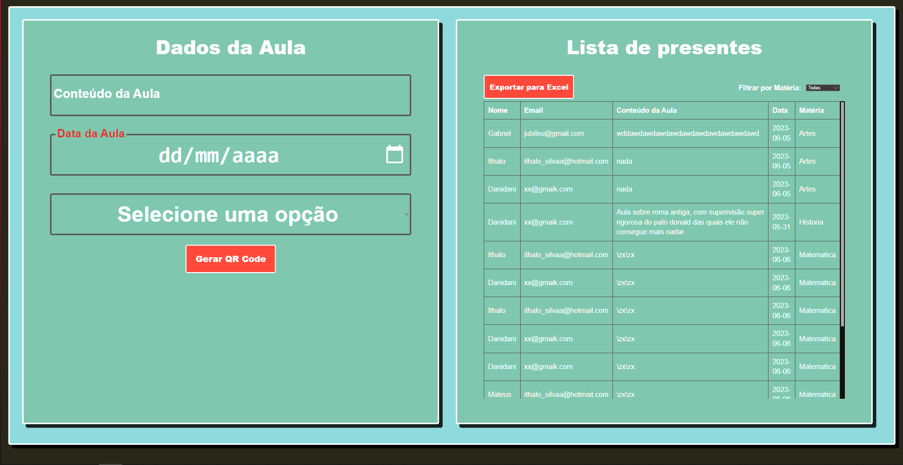

Nascido em janeiro de 2002, sou um estudante dedicado de Análise e
Desenvolvimento de Sistemas, apaixonado por tecnologia e sempre ávido
por conhecimento. Minha jornada é impulsionada pela busca incessante por
novidades e inovações no campo da tecnologia.
Minha paixão pela área é evidente em meu constante interesse por novas
tendências e avanços, mantendo-me atualizado sobre as últimas novidades
e práticas na área de TI. Sou conhecido por minha mente criativa e
habilidades de concepção de novos projetos, onde busco integrar a
tecnologia para criar soluções inovadoras e eficazes.
Com uma mentalidade ágil e proativa, estou sempre disposto a enfrentar
desafios, aprendendo com eles e transformando-os em oportunidades para o
meu crescimento pessoal e profissional. Minha abordagem inquisitiva e
apaixonada pela resolução de problemas impulsionam minha busca contínua
por aprimoramento técnico e criativo.
Estou pronto para abraçar novos desafios, colaborar em projetos
empolgantes e contribuir de maneira significativa para o mundo da
tecnologia, utilizando minha paixão, criatividade e habilidades técnicas
para impulsionar mudanças positivas e inovação no campo de Análise e
Desenvolvimento de Sistemas.
Born in January 2002, I am a dedicated student of Analysis and Systems
Development, passionate about technology and always eager for knowledge.
My journey is driven by the relentless pursuit of novelties and
innovations in the field of technology.
My passion for the field is evident in my constant interest in new
trends and advancements, keeping me updated on the latest news and
practices in the IT sector. I am known for my creative mind and innate
skills in designing new projects, where I strive to integrate technology
to create innovative and effective solutions.
With an agile and proactive mindset, I am always willing to face
challenges, learning from them and turning them into opportunities for
my personal and professional growth. My inquisitive approach and passion
for problem-solving drive my continuous quest for technical and creative
improvement.
I am ready to embrace new challenges, collaborate on exciting projects,
and contribute significantly to the world of technology, utilizing my
passion, creativity, and technical skills to drive positive change and
innovation in the field of Analysis and Systems Development.
Meus Projetos/My Projects
Projeto 1/Project 1
Este projeto consiste em um sistema avançado de chamada escolar
automatizada, que opera através da leitura de um código QR pelo aluno
para registrar sua presença. Essa abordagem inovadora agiliza o
processo de chamada, proporcionando uma maneira eficiente e moderna de
acompanhar a presença dos alunos nas aulas.
This project revolves around an automated school attendance system
that operates by scanning a QR code presented by the student to record
their presence.
Project 2
Meu projeto utiliza inteligência artificial para identificar padrões
de agressividade em pacientes com Transtorno de Déficit de Atenção com
Hiperatividade (TDAH). A pesquisa se baseia na análise de dados dos
pacientes usando algoritmos de inteligência artificial, com destaque
para um algoritmo chamado Rede Neural Artificial (RNA), que demonstrou
uma precisão de 93,7%. O processo é direto: os dados do paciente são
inseridos em um formulário e, em seguida, são processados pelo
algoritmo de RNA. Isso permite prever comportamentos agressivos nos
pacientes com TDAH. Essa abordagem tem potencial para melhorar o
diagnóstico e o tratamento desses pacientes, oferecendo uma maneira
mais eficaz de compreender e lidar com a agressividade associada ao
TDAH
My project utilizes artificial intelligence to identify aggression
patterns in patients diagnosed with Attention Deficit Hyperactivity
Disorder (ADHD). The research relies on analyzing patient data using
artificial intelligence algorithms, notably a type called Artificial
Neural Networks (ANN), which demonstrated an accuracy rate of 93.7%.
The process is straightforward: patient data is inputted into a form
and then processed through the ANN algorithm. This enables the
prediction of aggressive behaviors in ADHD patients. This approach
holds the potential to enhance the diagnosis and treatment of these
patients, providing a more effective way to understand and address
aggression associated with ADHD.
Fico contente em receber sua visita! Se você tem alguma dúvida, deseja
colaborar ou apenas quer trocar ideias, estou à disposição para
conversarmos. Sinta-se à vontade para entrar em contato através do
e-mail
gabrielcardoso306@gmail.com.
Estou ansioso para ouvir suas perguntas, sugestões ou propostas.
Responderei o mais breve possível.
Grato pela visita e pelo interesse!
Atenciosamente,
[GABRIEL CARDOSO]
Hello there!
I'm delighted to have you here! Whether you have any inquiries, wish to
collaborate, or simply want to exchange ideas, I'm available for a chat.
Feel free to get in touch via email at
gabrielcardoso306@gmail.com.
I'm looking forward to hearing your questions, suggestions, or
proposals. I'll get back to you as soon as possible.
Thank you for visiting and showing interest!
Best regards,
[GABRIEL CARDOSO]
×
Project 1
Imagens relativas ao Projeto 1/Related images about Project 1

Imagem do sistema do professor/Image of teacher's system
Imagem do aplicativo do aluno/Image of student's system
×
Projeto2/Project 2
Imagens relativas ao Projeto 1/Related images about Project 2
Formulário para alimentar a IA e prever agressividade/Form for
feeding AI and predicting aggression
Previsão/Prediction